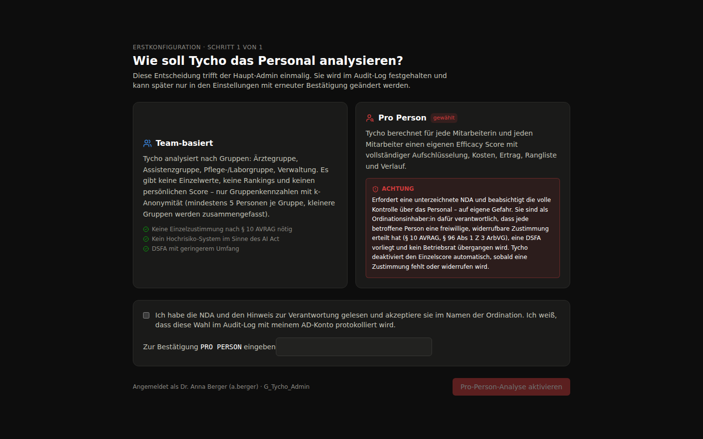
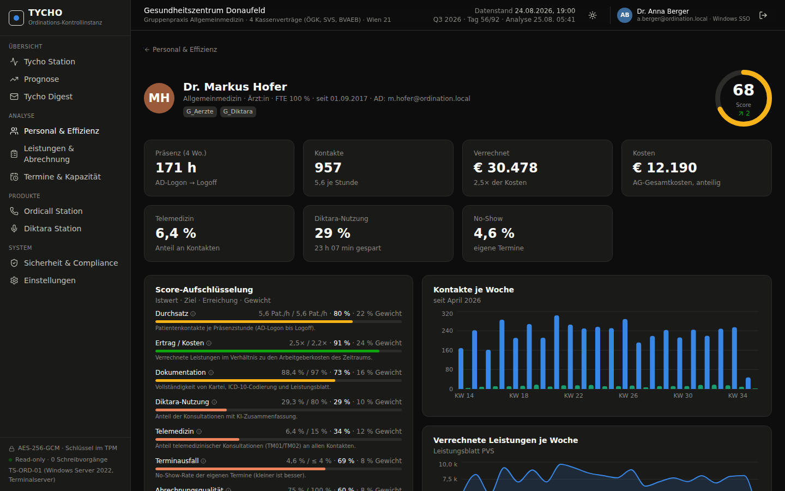
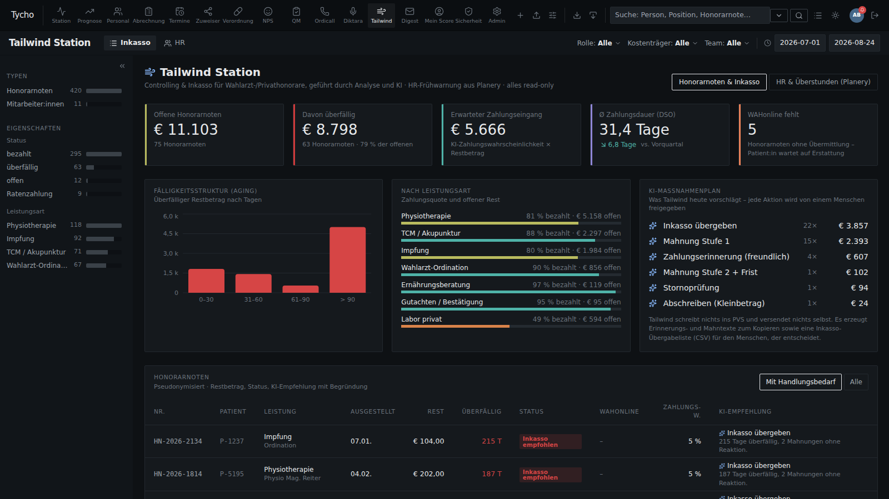
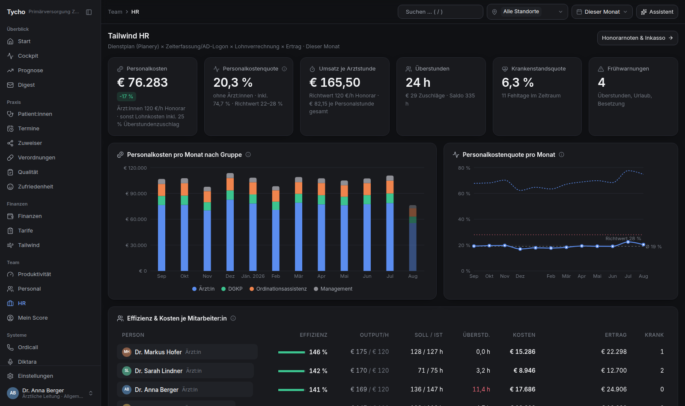
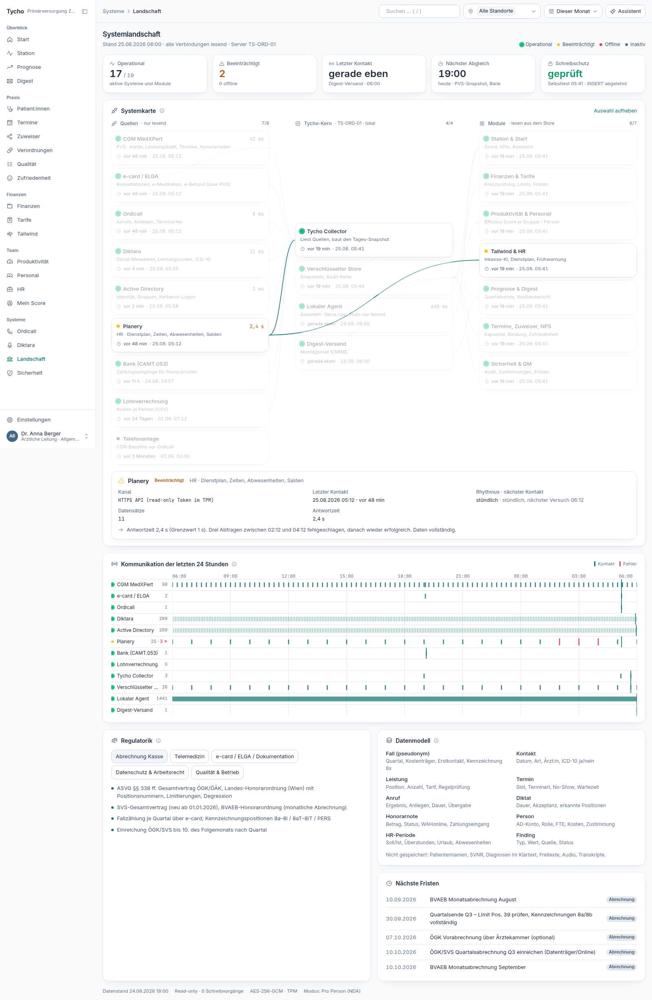
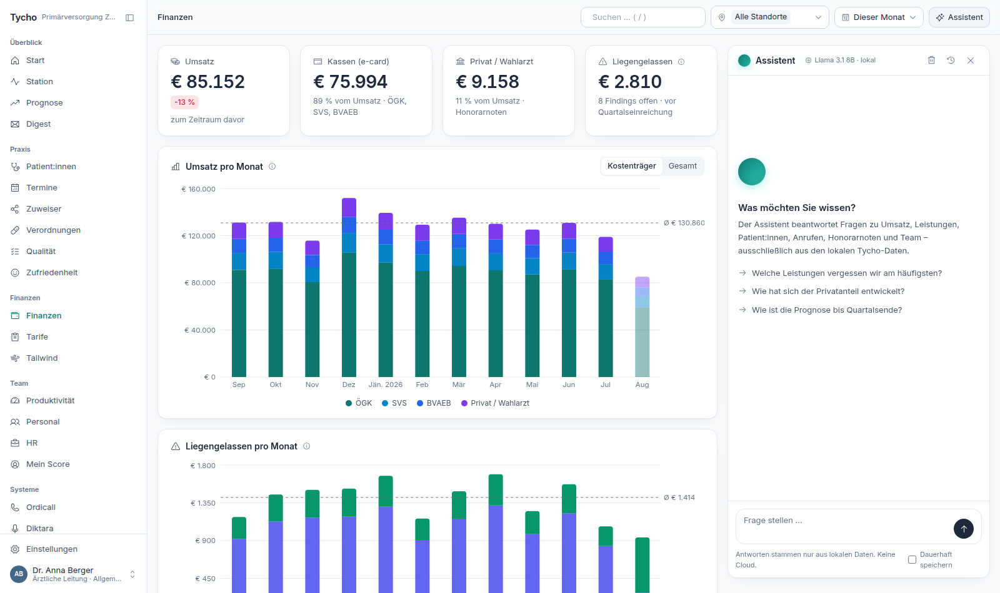

Je Rolle eine feste Liste aus Istwert, Zielwert und Gewicht. Der Ordinationsscore ist das kostengewichtete Mittel. Jede Komponente ist sichtbar, die Zielwerte legen Sie fest.
Produkt
Alles, was Ihre Ordination leistet. Auf einer Oberfläche.
Tycho rechnet in der Nacht aus Ihren eigenen Systemen und legt Ihnen morgens ein Bild hin: wo die Ordination steht, was sie am Quartalsende erreicht, was liegen geblieben ist und woran das lag. Elf Bereiche, ein Datenmodell, jeder Wert bis zur Quelle nachvollziehbar.
Tycho Station/01
Die Ordination auf
einem Bildschirm.
Der Einstieg für die Leitung. Eine Kennzahlenleiste, die sich nach Rolle, Kostenträger, Team, Standort und Zeitraum filtern lässt, darunter die Verteilung nach Leistungsgruppe, der Tagesverlauf und die Punkte, die Aufmerksamkeit brauchen.

Telemedizinanteil, Ausfallquote, Wartezeit, Dokumentationszeit, manuell erledigte Anrufe und Codierquote nach ICD 10, jeweils gegen Ihren Zielwert.
Keine Wand aus Zahlen, sondern eine kurze Liste: was auffällig ist, wie viel es wert ist und woher der Hinweis stammt.
Prognose/02
Wissen, wie das Quartal
ausgeht. Im Quartal.
Der Bescheid der Kasse kommt Monate später. Tycho rechnet aus dem laufenden Quartal hoch: Honorar, Scheinzahl und Fallwert, mit einem Band statt einer Scheingenauigkeit, getrennt nach Kostenträger.
Die Hochrechnung läuft auf Tagesdatensätzen und zeigt ein Neunzigprozentband statt einer einzelnen Zahl. Daneben steht, wie es im Vorquartal und im Vorjahr zur selben Zeit aussah. Die Methodik ist offengelegt, nicht als Blackbox versteckt.
Dazu Szenarien, die Sie selbst durchspielen: was bringt es, wenn die Ausfallquote um einen Punkt sinkt, wenn ein Behandlungstag mehr besetzt ist, wenn die Vorsorgeuntersuchungen konsequent abgeschlossen werden. Sie sehen den Effekt in Euro, bevor Sie etwas entscheiden.
- Honorar, Scheine und Fallwert bis Quartalsende
- Aufteilung nach ÖGK, SVS, BVAEB, Privat und Wahlarzt
- Vergleich mit Vorquartal und Vorjahresquartal
- Ausschöpfung limitierter Positionen mit Ampel

Kreuzprüfung/03
Erbracht, dokumentiert,
nicht verrechnet.
Der Teil, der sich am schnellsten rechnet. Tycho legt das Leistungsblatt neben Kartei, Termine, die aus der Dokumentation erkannten Leistungen und die e-card Konsultationen. Was nicht zusammenpasst, steht als Liste da, mit Betrag und Begründung.

Das verrechnete Leistungsblatt, Positionen, Limitierungen und Rhythmen nach der Honorarordnung.
Welche Leistungen die Dokumentations-KI im Diktat erkannt hat, auch wenn sie nie auf dem Leistungsblatt landeten.
Konsultationen, zu denen keine Grundleistung steht, und Terminarten, die eine Position erwarten lassen.
Terminwünsche aus Anrufen, die nie zu einem Termin wurden. Umsatz, der nie entstanden ist.
Dazu ein Fristenkalender und die geprüften Abrechnungsregeln: welche Position wie oft je Fall zulässig ist, welche Kombination gesperrt ist, wo eine Deckelung greift. Tycho verrechnet nichts und sendet nichts. Es erzeugt eine Liste, die ein Mensch prüft und freigibt.
Tycho Digest/04
Montag um sechs,
im Postfach.
Die meisten Auswertungssysteme scheitern daran, dass niemand sie öffnet. Tycho kommt zu Ihnen: ein Bericht je Woche, in ganzen Sätzen, mit den Zahlen, die sich verändert haben, und der Erklärung dazu.

Im Digest steht, was sich gegenüber der Vorwoche bewegt hat, welche Auffälligkeit dahintersteckt und was sie wert ist. Keine Rohdaten, kein Diagrammfriedhof. Wer mehr wissen will, klickt in Tycho hinein.
- Versandplan und Empfängerkreis frei einstellbar
- Signiert und verschlüsselt über S/MIME
- Archiv aller bisherigen Ausgaben in Tycho
- Im Team-Modus ohne Einzelwerte zu Personen
Personal und Effizienz/05
Leistung sichtbar machen,
ohne jemanden vorzuführen.
Der heikelste Teil, deshalb der am sorgfältigsten gebaute. Sie entscheiden beim ersten Start, ob Tycho nach Gruppen oder nach Person auswertet. Diese Entscheidung wirkt auf jede Ansicht und lässt sich nicht nebenbei umgehen.


Ärztegruppe, Pflege und Labor, Assistenz, Verwaltung. Gruppen unter fünf Personen werden nicht ausgewiesen. Keine Einzelzustimmung nötig.
Einzelwerte gibt es erst nach Zustimmung jeder betroffenen Person, mit Verschwiegenheitserklärung, Folgenabschätzung und menschlicher Prüfung. Ein Widerruf schaltet den Einzelwert sofort ab.
Unabhängig vom Modus kann jede Mitarbeiterin und jeder Mitarbeiter die eigenen Werte einsehen, ohne Leitungsrechte. Transparenz in beide Richtungen.
Der Score ist eine Empfehlung. Tycho löst keine automatische Folge aus, weder eine Warnung noch eine Maßnahme. Jede Konsequenz trifft ein Mensch, der die Aufschlüsselung vor sich hat. Das ist keine Zurückhaltung aus Höflichkeit, sondern die rechtliche Grundlage, auf der ein solches System überhaupt betrieben werden darf.
Tailwind/06
Offene Honorarnoten
und was dagegen hilft.
Die Station für Wahlarzt- und Privathonorare: Physiotherapie, TCM, Impfungen, Gutachten, Privatlabor. Dazu die Personalseite aus dem Dienstplan, streng getrennt und eigens berechtigt.


Tailwind versendet keine Mahnung und ändert keinen Datensatz. Es erzeugt Texte und Übergabelisten für Menschen. Die Personalseite ist an eine eigene Berechtigung gebunden, hat einen eigenen Schlüssel, ein eigenes Protokoll und eine Aufbewahrung von zwölf Monaten.
Weitere Bereiche/07
Was sonst noch
mitläuft.
Alles aus demselben Datenbestand, alles über dieselben Filter. Module lassen sich einzeln zuschalten und wieder abschalten.
Auslastung nach Wochentag und Stunde, Ausfallquote nach Terminart, Wartezeit, fällige Vorsorge und Kontrollen, Durchlaufzeit bis zum fertigen Arztbrief.
Einteilung nach Bedeutung, Entwicklung über die Zeit, abgesprungene und neue Zuweiser, jeweils mit einem Vorschlag, was zu tun wäre.
Verordnungskosten je Patientin und Patient, Generikaanteil, Ausreißer mit Einsparpotenzial, bevor die Prüfung von außen kommt.
Bewertungen und Umfragen zusammengeführt, nach Themen sortiert und gegen die Wartezeit gehalten. Reputation ist messbar.
Geräteprüfungen, Schulungen, Hygieneplan und Dokumente mit Ampel. Die Pflichten, an die sich niemand gern erinnert.
Eine Karte von Quelle über Sammler und Speicher bis zur Ansicht, dazu die Regelwerke, die dahinterstehen, und die nächsten Fristen.

Der Assistent/08
Fragen Sie einfach,
auf Deutsch.
Statt sich durch Filter zu klicken, können Sie Tycho fragen. Welche Leistung bringt den meisten Umsatz. Welche Honorarnoten sind überfällig. Wie sieht die Auslastung im nächsten Monat aus.

Das Sprachmodell läuft auf Ihrem eigenen Server. Es hat ausschließlich Zugriff auf dieselben lesenden Auswertungsfunktionen wie die Oberfläche, keine Patientendaten im Kontext, keine Verbindung nach außen. Es kann nichts erfinden, was nicht in Ihren Zahlen steht, weil es die Werte mitzitiert.
Ein Verlauf wird nur gespeichert, wenn Sie das ausdrücklich einschalten, und dann im selben verschlüsselten Speicher wie alles andere.
- Lokales Sprachmodell auf dem Ordinationsserver
- Nur lesende Funktionen, keine Patientendaten im Prompt
- Antworten mit Rohwerten und Quellenangabe
- Kein Cloudaufruf, keine Übertragung nach außen
Nächster Schritt
Sehen Sie das an Ihren Zahlen.
Wir zeigen Tycho live, prüfen im Gespräch, welches Praxisverwaltungssystem bei Ihnen läuft, und sagen offen, welche Bereiche damit sofort gehen.